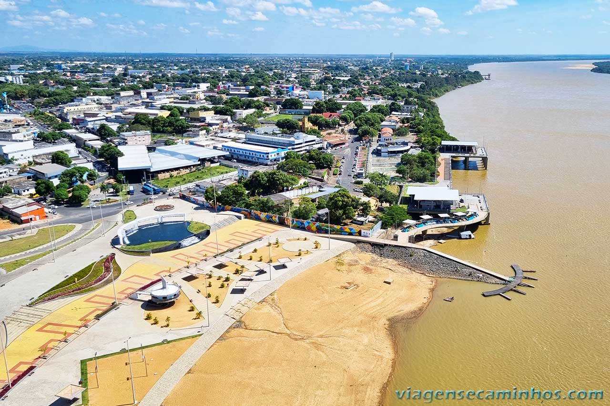

Seja bem vindo a Roraima
Roraima é o estado mais ao norte do Brasil, localizado na Região Norte e fazendo fronteira com a Venezuela e a Guiana. Sua capital é Boa Vista. O estado é conhecido por suas paisagens naturais, como o Monte Roraima, uma formação de tepui que é um ponto turístico importante. A economia de Roraima é baseada na agricultura, pecuária e extrativismo. Roraima tem uma população com forte presença indígena e é uma das regiões menos povoadas do Brasil.

Voltar